I specialize in end-to-end software and data interfaces, autonomous workflows, scientific programming pipelines,
and animal-computer interactions. I have over a decade of experience building full-stack autonomous devices,
embedded distributed systems, and machine vision pipelines.
Data engineering · Software Development · Machine vision · Cognitive enrichment
About
I was born in Sicily and trained as a neuroscientist and neuropsychologist across Italy, UK, and Germany.
Over the last decade I have worked at the intersection of cognitive neuroscience, machine vision, and
software engineering, focusing on advancing knowledge and research methods, efficiently and ethically.
During my PhD in Systems Neuroscience at the University of Göttingen, I worked on the electrophysiology
of the macaque visual cortex and on the psychophysics of spatial attention. Throughout my PostDocs
I built autonomous systems to turn cognitive training of non-human primates into gamified assessment and enrichment
that allowed more efficient high-throughput research while enhancing ethical standards.
Today I lead the development of autonomous behavioral tracking and enrichment platforms at the
Primate Cognition and Behavior facility at the German Primate Center.
I enjoy designing systems end-to-end: from CAD models and embedded hardware to data pipelines and user-facing tools for scientists, vets, and technicians.
My work has led to open-access publications, new research infrastructure, and concrete improvements in animal welfare.
Outside of work I am a father of three, an amateur musician, and an aspiring game designer.
Full-stack developer
from embedded linux to front-end interfaces - for data science, machine vision, and advanced UX.
Programming
Python
Matlab
C# / C++
Bash
Machine Vision
CUDA / MPS
OpenCV
TensorFlow
CNNs, Poses, Identities
Markerless 3D tracking
Data
End-to-end workflows
GitHub / CI/CD
Docker & Ansible
GPU clusters
Hardware
Nvidia Jetson
Raspberry Pi
PCB basics
Microcontrollers
CAD & 3D printing
Touchscreens
Experience
Leading technical teams and infrastructures for animal cognition and machine vision.
Lead Machine Vision Engineer2023 – present
German Primate Center · Göttingen, Germany
Leading a team of engineers to build full-stack machine vision pipelines for
3D tracking and ID recognition of macaques in a new research
facility. Responsibilities span system architecture, GPU cluster orchestration,
and user-facing tools for researchers and animal care staff.
Postdoctoral Researcher2020 – 2022
Cognitive Neuroscience Laboratory · German Primate Center
Developed CNN-based detection systems for autonomous training and assessment of
monkeys, and designed gamified tasks to increase engagement and data throughput.
Integrated behavioural, neural, and eye-movement data into unified analysis workflows.
Junior Postdoctoral Researcher2016 – 2019
Institute for Auditory Neuroscience · University Medical Center Göttingen
Built autonomous auditory training and psychophysics systems for common marmosets
and implemented group-based cognitive training and enrichment protocols for macaques.
PhD in Systems Neuroscience2011 – 2016
University of Göttingen · Germany
Worked on multidimensional mapping of macaque visual cortex (area MST), eye movements
and visual attention in humans, and early prototypes of cage-based autonomous
touchscreens for monkeys.
Selected Publications
A subset of peer-reviewed work spanning methods, cognition, and animal enrichment.
Calapai A. et al. (2022) –
Flexible auditory training, psychophysics, and enrichment of common marmosets with an
automated, touchscreen-based system. Nature Communications.
Calapai A. et al. (2016) –
A cage-based training, cognitive testing and enrichment system for rhesus macaques.
Behavior Research Methods.
Berger M., Calapai A. et al. (2018) –
Standardized automated training of rhesus monkeys in their housing environment.
Journal of Neurophysiology.
Xue C., Calapai A. et al. (2020) –
Sustained spatial attention accounts for the direction bias of human microsaccades.
Scientific Reports.
Cabrera-Moreno J., Calapai A. et al. (2022) –
Group-based, autonomous, individualized training and testing of long-tailed macaques
in their home enclosure. Frontiers in Psychology.
A selection of projects at the intersection of neuroscience, machine vision, and autonomous systems.
Autonomous Behavioural Tracking (ABT)
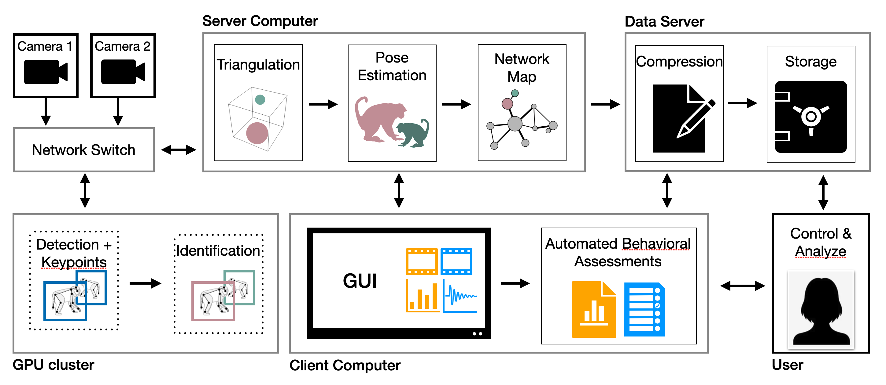
In this projects I am lead developer and coordinator of a group engineers and data scientists
belonging to different research groups of the Cognitive Neuroscience Laboratory (CNL) of the
German Primate Center. Here I designed and led the development of a stand-alone software to be
able to track, identify, and extract the posture of rhesus macaques in their enclosure with
the aim of autonomously assessing animals’ welfare and behaviour 24/7 without direct interference.
The system coordinates a network of synchronized cameras, GPU-based inference modules,
and centralized data-management pipelines to support continuous, high-throughput acquisition,
compression, analysis, and reporting.
High-resolution video streams are captured by up to 16 Hikrobot GigE cameras,
connected through a dedicated network switch and synchronized via PTP or software
triggering. These streams are transmitted to a distributed GPU cluster, where a
2D Prediction module performs real-time object detection, keypoint extraction, and
individual animal identification.
Each node in the cluster employs TensorRT-optimized CNNs, trained and fine-tuned
through custom modules (Model Training and Model Optimization). Every processed frame
generates structured outputs—including bounding boxes, anatomical keypoints, and identity
labels—which are automatically logged and archived into text-based databases.
Processed outputs from the GPU cluster are transmitted to a Server computer, where
3D Calibration, 3D Transformation, and 3D Localization modules reconstruct
absolute spatial positions from synchronized camera pairs. Calibration follows checkerboard-based
stereo recordings using the JARVIS protocol (jarvis-mocap.github.io), generating
intrinsic/extrinsic parameters and distortion coefficients for each camera.
Transformation matrices are then computed to project all 2D coordinates into a unified world
reference frame, enabling accurate 3D pose reconstruction and multi-animal
tracking across large experimental spaces. The data server manages compression, indexing,
and long-term storage of video and derivative datasets, ensuring reproducibility and accessibility.
Users interact with the system via the ABT graphical interface from a client computer,
which integrates tools for acquisition scheduling, system monitoring, and visualization of processed
results. The GUI also links to automated analysis modules that routinely compute behavioral readouts
and statistical summaries directly from processed data.
This automated architecture is designed to allow researchers to focus on analysis and interpretation,
while simultaneously enhancing reproducibility and standardization
across experimental setups and research questions.
Cognitive Assessment, enrichment, and training, for Monkeys: the XBI devices
Here I have focused on designing, developing, and deploying touchscreen devices, code,
and experimental protocols for captive monkeys (Rhesus macaques, Common Marmosets, Long-tailed macaques).
The devices are known as Experimental Behavioral Instruments, XBIs in short.
This approach represents a paradigm shift from traditional chair-seated methods, offering numerous benefits
for both the animals and the research process, and as a consequence it has received the support of the
scientific community. Through these devices and activities, captive animals can access cognitive training
and enrichment directly from their home enclosure. This not only reduces potential stress associated with
movement constraints but also provides cognitive assessment data.
From a practical standpoint, this system enhances the way cognitive research can be conducted.
By automating the data acquisition process, I have contributed to streamlining the research workflow,
saving considerable time and resources while improving animal welfare. This automation allows for
scaling up the number of animals tested simultaneously, addressing previous ethical, practical,
and scientific limitations in cognitive research with primates
Neuronal Encoding of Motion and Depth
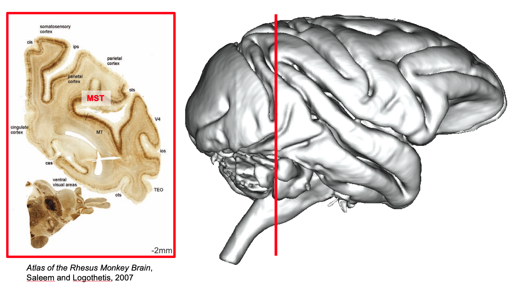
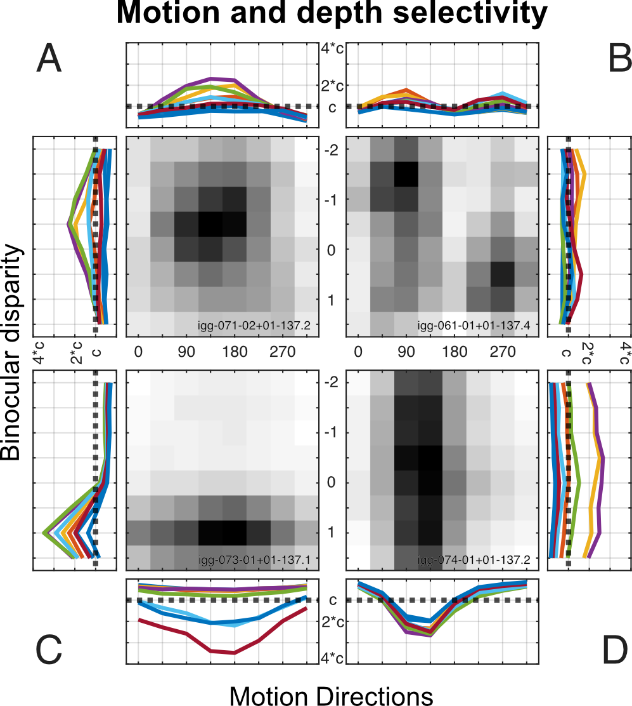
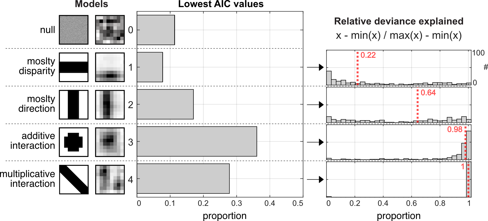
As part of my electrophysiology work, I investigated how single neurons in the macaque
Middle Superior Temporal area (MST) encode motion and depth information.
Monkeys were trained to fixate a central point, press a button for a dimming target, and wear
polarised glasses allowing presentation of stimuli at different depths.
While the animal performed this simple task, I recorded extracellular activity from MST neurons
as clouds of moving dots varied rapidly in both motion direction and binocular disparity. This
allowed me to map each neuron's receptive field and quantify its joint selectivity to motion
and depth using Reverse Correlation.
Theoretical work suggested that some MST neurons might act as self-motion detectors,
responding to specific combinations of direction and depth. In practice, I found a diversity
of tuning profiles, including neurons selective for:
specific motion–depth combinations,
motion only,
depth only,
or mixed/complex patterns.
Using Generalised Additive Models (GAMs) on 194 neurons, only one neuron
showed tuning consistent with a true self-motion detector. Most neurons combined motion and
depth in ways that provided the building blocks for self-motion computation, but not the
complete computation itself.
These results indicate that MST does not explicitly encode self-motion, but instead provides
intermediate representations that are likely integrated downstream to support
perception of self-movement through space.
Machine Vision for Monkeys Identification
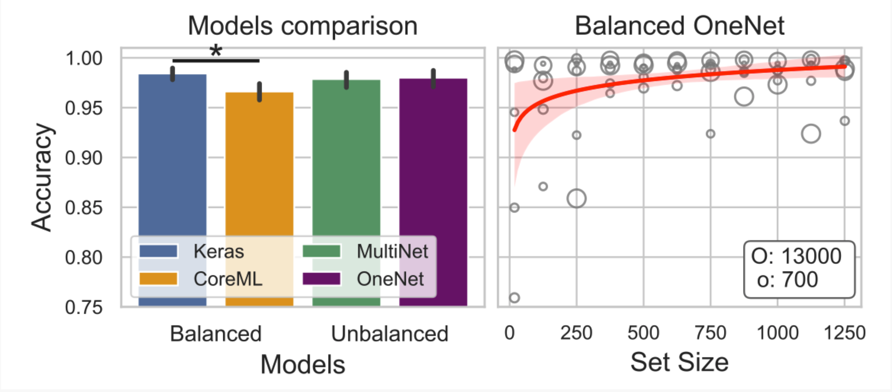
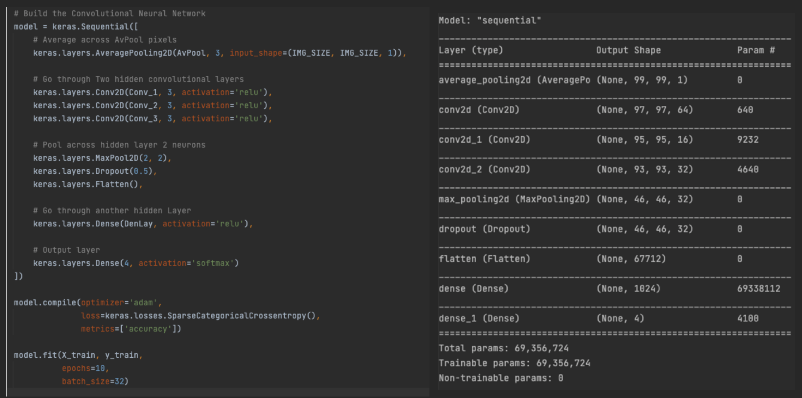
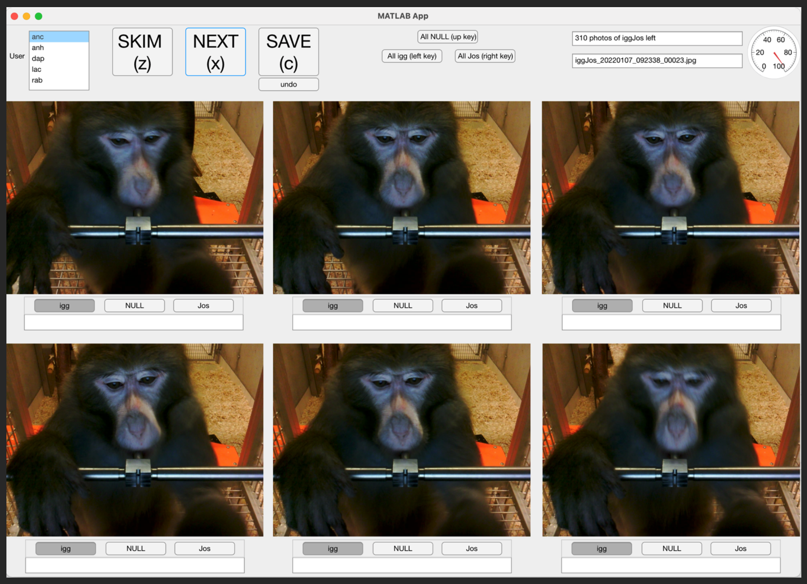
Since 2020, as part of my transition from neuroscience to software engineering, I have
integrated machine-learning approaches into several projects to solve three crucial challenges:
identifying which animal is operating a touchscreen at any moment, enabling standardised yet individualised training and enrichment (Berger et al. 2018; Calapai et al. 2022; Cabrera-Moreno et al. 2022);
estimating gaze direction in real time while animals interact with touchscreen devices;
autonomously extracting location, identity, posture, and behaviour from video recordings with minimal human supervision.
Animal identification: real-time, low-latency CNN model
To identify animals in real time, I trained a convolutional neural network in TensorFlow
(Python 3.7). The model consisted of:
an average pooling input layer (6×3 kernel),
three convolutional layers (3×3 kernels; 64, 16, 32 units),
max-pooling, dropout, and flatten layers,
a dense hidden layer (ReLU),
a softmax output layer including an additional “null” class for accidental triggers.
The network was trained for 10 epochs (batch size 32) using an adam optimizer, sparse
categorical cross-entropy, and accuracy as metric. Ground truth for the 40k training images
was created through a custom MATLAB GUI capable of labelling ~50 images per minute.
This approach was applied to 11 animals across four housing groups (long-tailed and rhesus
macaques). Across >30k evaluations, the framework and training method had a much larger impact
on accuracy than the number of animals per network: the TensorFlow/Keras model I designed
significantly outperformed an equivalent CoreML model trained as a black box on a MacBook Pro.
The best model (Keras) reached 97.5% identification accuracy across 8 test animals and
40k images. The end-to-end processing time—from capturing the image to returning the identity
and loading the correct training target—was 176 ms, enabling genuine real-time use.
In my 2022 publication (Cabrera-Moreno et al.), this method was used in real time to implement
individualised, step-wise training for a visuo-acoustic discrimination task with long-tailed
macaques.
Automated hyperparameter search
To identify the optimal network structure, I implemented an automated bootstrap procedure
(executed on Google Colab with GPU) exploring 46 parameter combinations, including:
average pooling kernel size,
number of units in the three convolutional layers,
number of units in the dense hidden layer.
The best configuration achieved 98.7% accuracy in a two-animal test dataset and was used
during the actual experiment.
This work is fully described in the peer-reviewed publication by Cabrera-Moreno et al. (2022).
Video-based gaze estimation
In ongoing work, I apply DeepLabCut and custom machine-learning pipelines to detect
rhesus macaque and marmoset eyes in real time during touchscreen-based cognitive tasks.
The aim is to integrate gaze estimation directly into behavioural training, assessment,
and enrichment routines.
(Work in progress — please feel free to contact me for details.)
Gamified Psychophysics
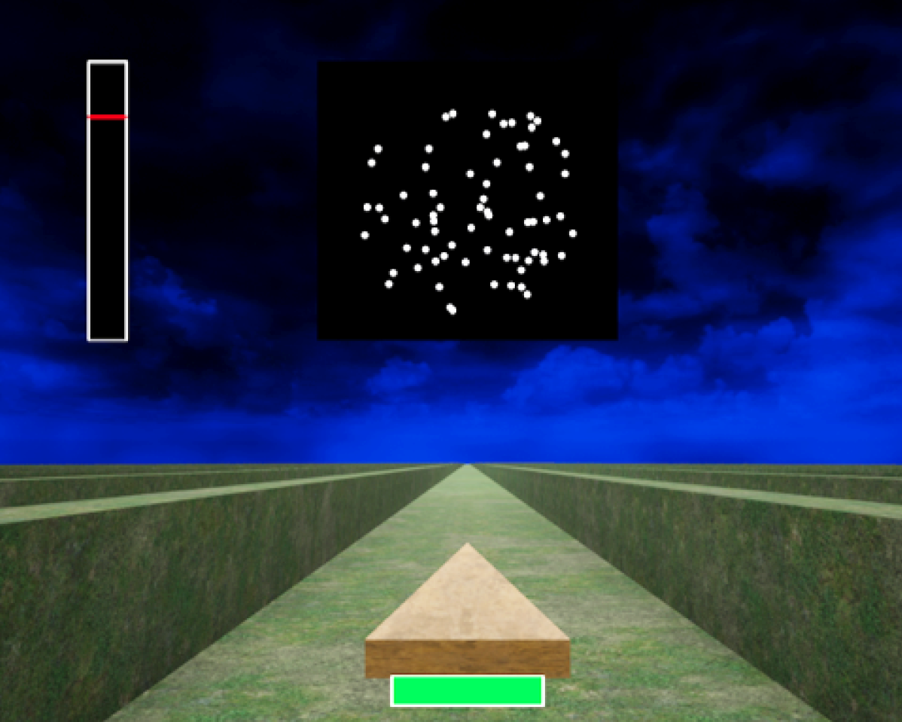
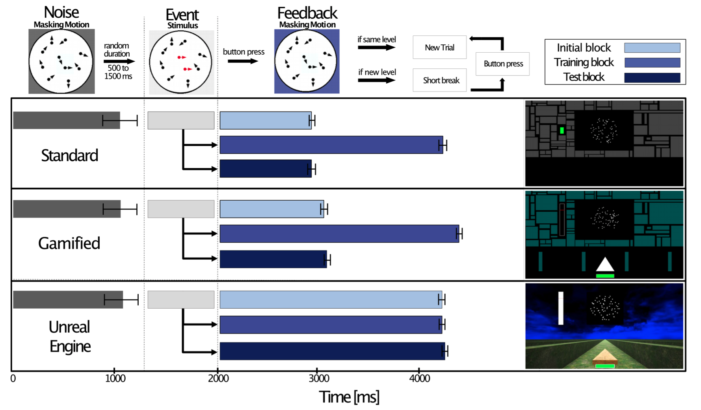
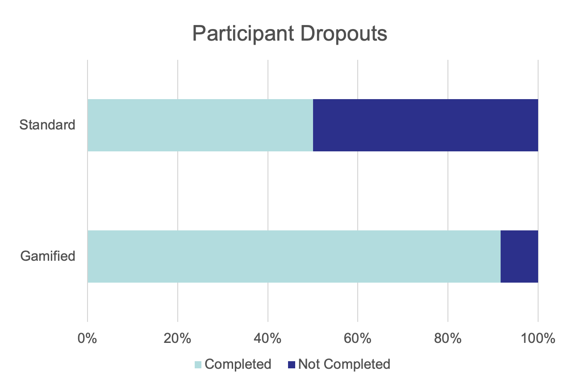
Since 2022 I am designing, programming, and testing psychophysical experiments
that incorporate gaming elements, to study Cognition, Motion Processing,
Decision-Making, and Integration of Social Information.
Four major projects sparked from this effort:
An investigation on the validity of gamified psychophysics for the study of motion processing;
A dyadic, joystick-based game to study the integration of social information in decision-making;
A multiple-choice user interface optimised for cognitive assessment, enrichment, and psychophysics in monkeys;
A foraging-like game to study high-level cognitive flexibility in monkeys and humans.
Validity of gamified psychophysics for motion processing
Across three experimental conditions with gradually different levels of gamification
(Standard, Gamified, Unreal Engine), participants played the exact same motion-perception
task. Gamification increased satisfaction, reduced dropout rates, and improved motion sensitivity,
especially in the Unreal Engine condition.
Participants controlled an avatar that moved left/right by following the global motion of
a cloud of dots. Obstacles appeared too quickly to react, and could be avoided only by
correctly interpreting motion direction. Points, levels, and dynamic backgrounds supported
engagement without compromising psychophysical rigor.
Dyadic joystick game for social-information integration
This task evaluated whether humans integrate social motion cues during decision-making.
Two players simultaneously navigated using joysticks around a cloud of dots whose motion
predicted where targets would appear. Each participant saw their own arc and the other
player’s arc. Data analysis is ongoing and cannot be disclosed publicly yet.
Multiple-choice interface (“Task Bar”) for monkeys
This system, published in 2023 (Animals), allows monkeys to select cognitive enrichment
tasks from their enclosure — a “dock bar” with three buttons:
Static reach: touch a red ball
Dynamic reach: touch a moving red ball
Watch pictures of conspecifics
Monkeys reliably chose their preferred tasks, and button repositioning every hour did not
affect their preferences. Performance metrics (hit rates across size/speed combinations)
revealed consistent psychophysical signatures.
Foraging-like cognitive flexibility task
Published in 2022 (Frontiers in Psychology), this complex task assessed rule learning and
switching in monkeys and humans (including adults and children with/without ADHD). Animals
played thousands of trials per session with strong engagement.
Results show that humans are more flexible and abstract in rule learning, but monkeys display
stable individual styles and domain-general rule learning that does not depend on visual category.
Acoustic Perception in Marmosets
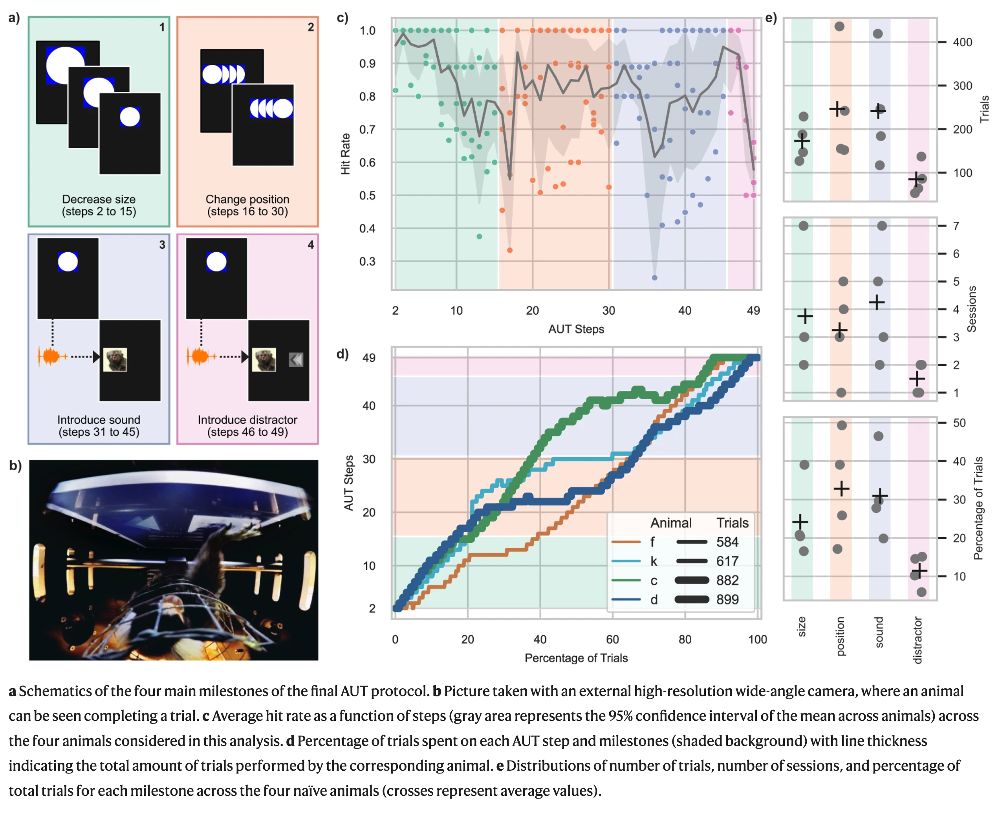
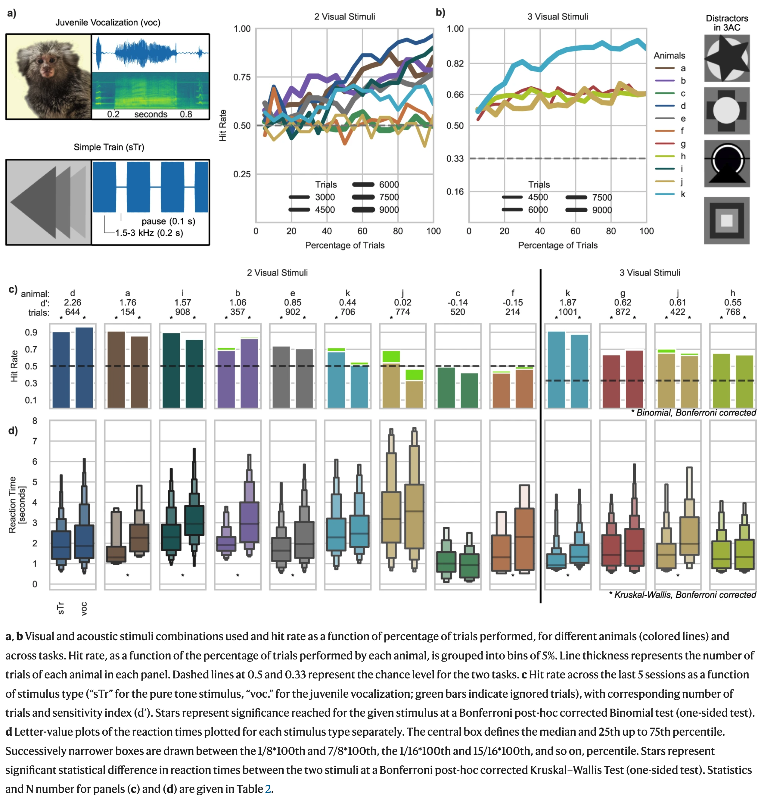
This project explored how natural, socially meaningful sounds can improve learning and
engagement in cognitive training. Using a fully autonomous touchscreen system designed
for common marmosets (MXBI), we showed that ecologically valid acoustic cues such as
conspecific calls lead to faster learning than artificial tones.
The MXBI system operates directly in home enclosures, where animals voluntarily interact
with sound-based tasks identified via RFID. The system adapts task difficulty in real time
and removes the need for social isolation or food deprivation, turning cognitive testing
into an enrichment activity aligned with natural behaviour.
The key result: ecological relevance matters. Marmosets learn faster, stay engaged longer,
and perform better when acoustic cues match their natural perceptual world.
Figure explanation: learning and motivation
Over repeated sessions, animals consistently improved their ability to associate specific
acoustic cues with visual choices, performing hundreds of voluntary trials per day without
supervision. Natural sounds evoked stronger curiosity and sustained motivation compared to
artificial tones or noise stimuli.
Hearing thresholds
Using an adaptive reward scheme across sound intensities, marmosets’ hearing thresholds were
automatically estimated in the MXBI system. Psychometric curves revealed thresholds around
27–49 dB SPL and matched known species-specific hearing ranges.
Sound categories and discrimination
Marmosets discriminated between five sound categories:
Juvenile calls
Twitter calls
Phee calls
Sine tones
White noise
Natural calls produced faster learning and higher accuracy than artificial sounds. Sensitivity
measures and hit rates both confirmed superior performance with biologically meaningful stimuli.
As first author, I developed the hardware, software architecture, adaptive algorithms, and
behavioural validation framework. The MXBI platform shows that auditory cognition can be
assessed ethically and fully autonomously inside social enclosures.
Contact
Open to roles in software or data engineering, applied machine learning, scientific programming, around the
area of Freiburg, Germany.


 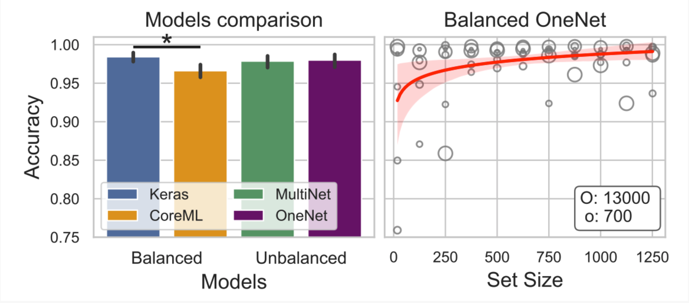
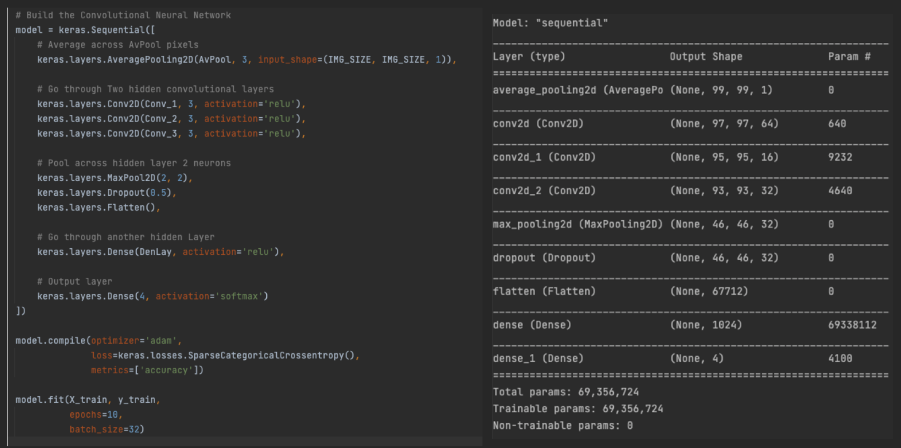
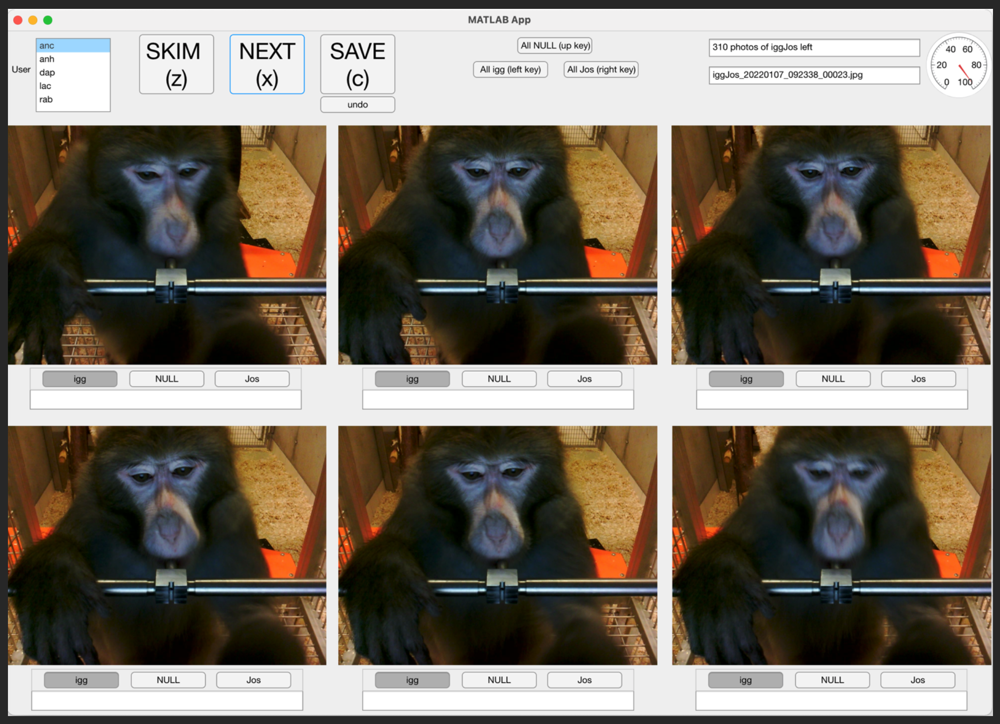
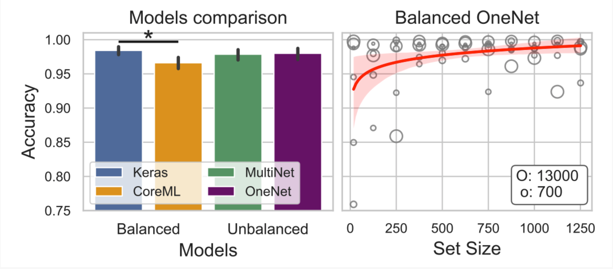
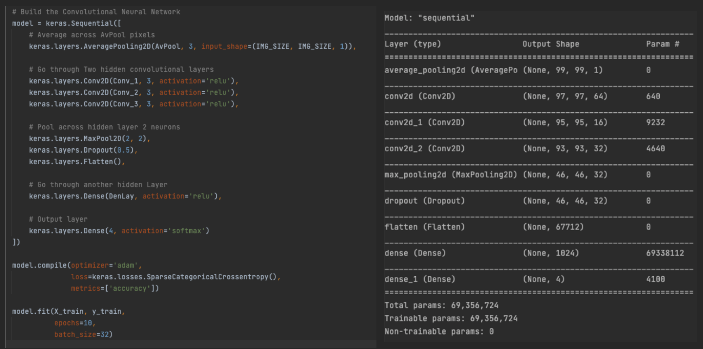
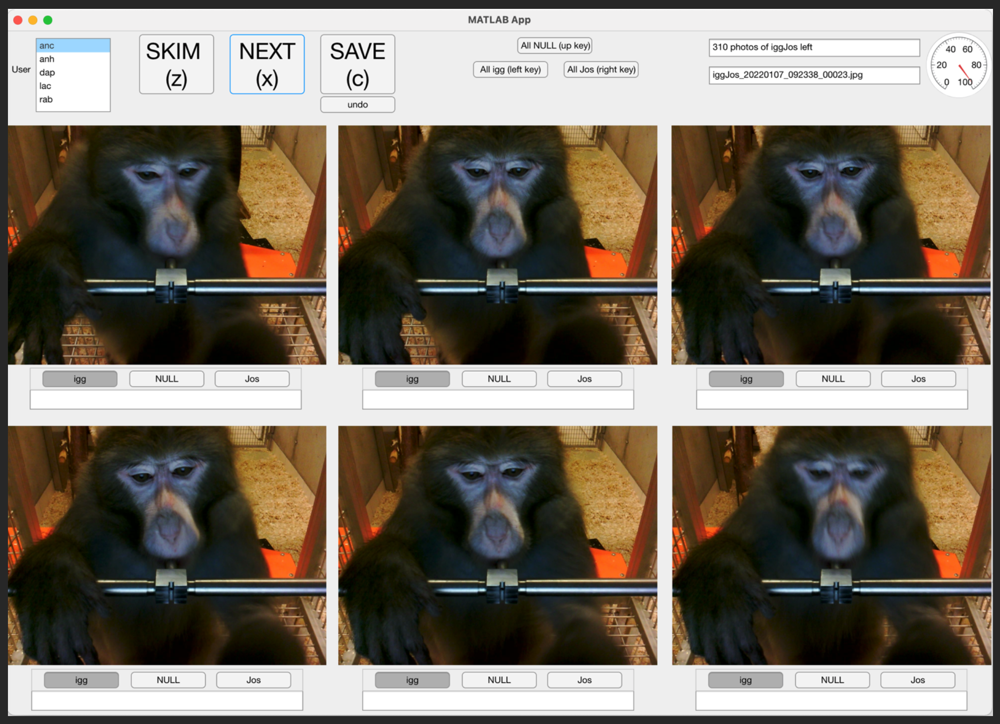
 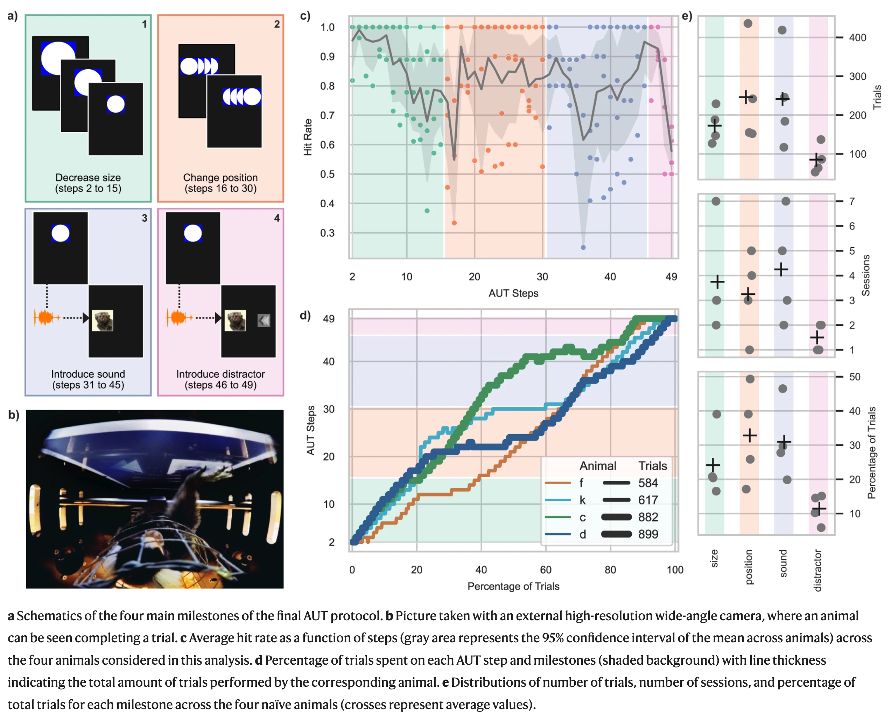
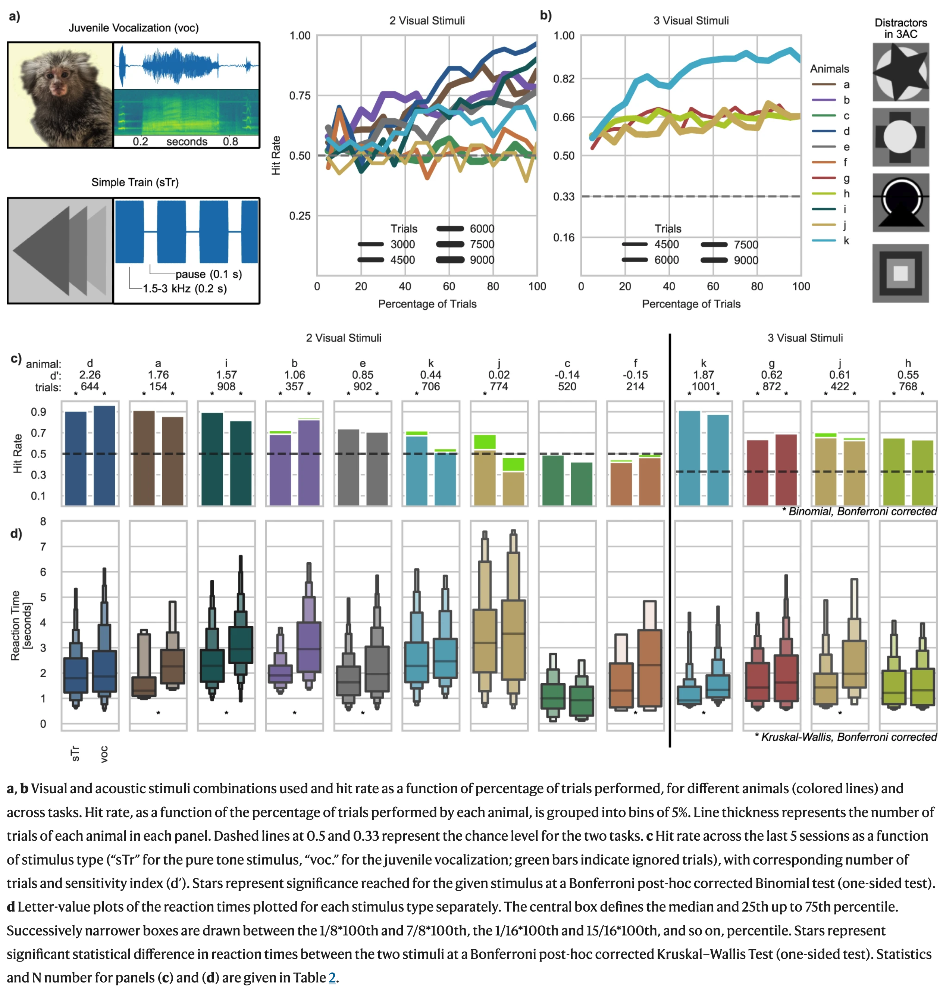
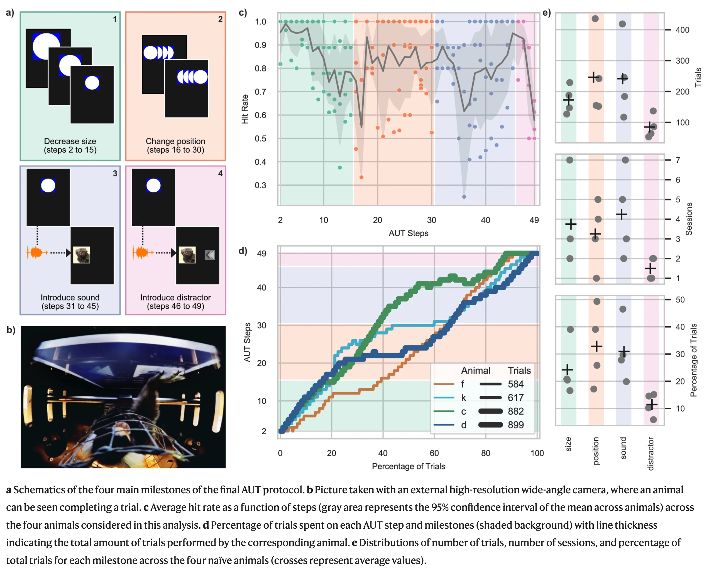
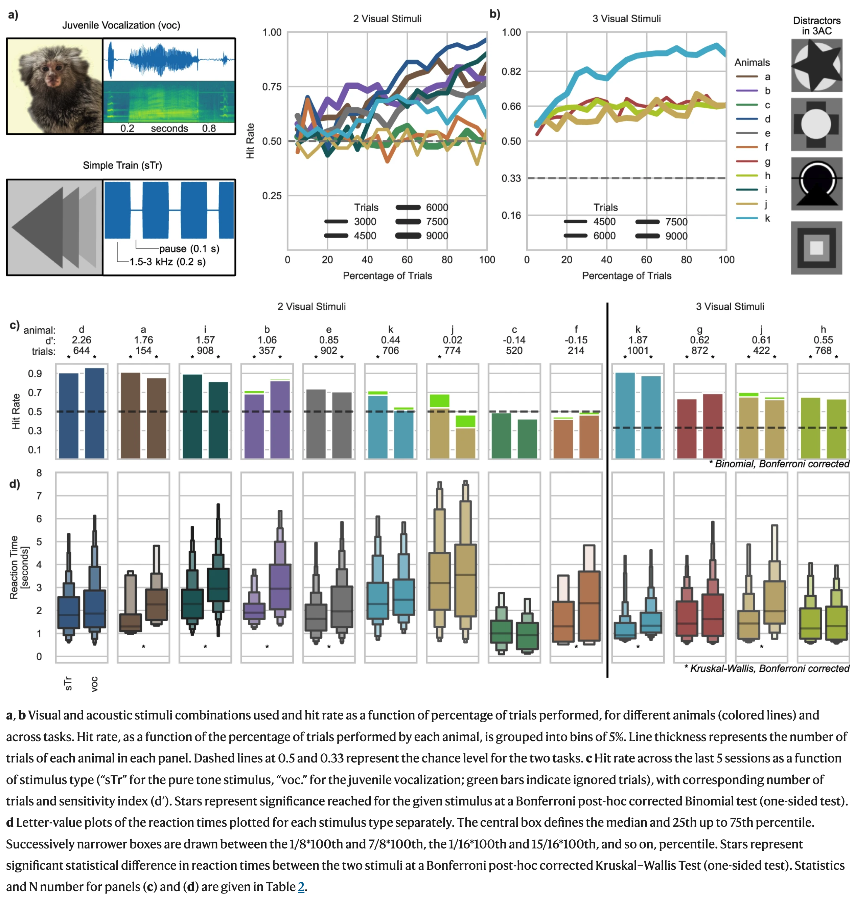